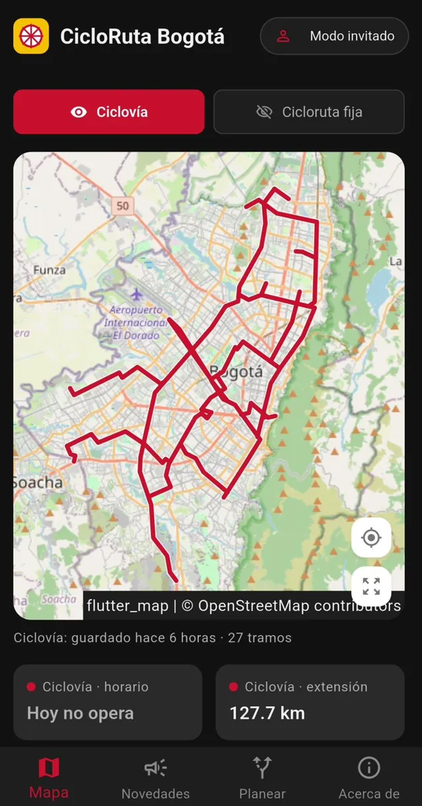
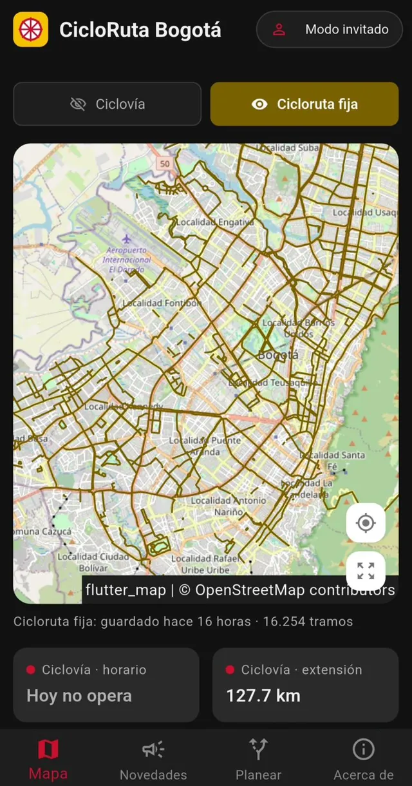
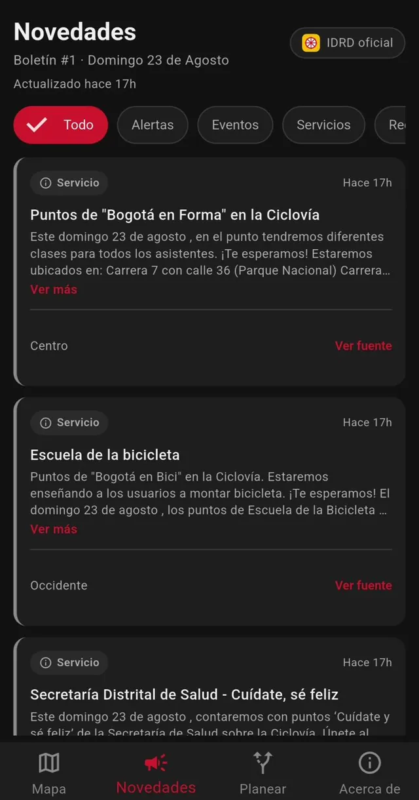
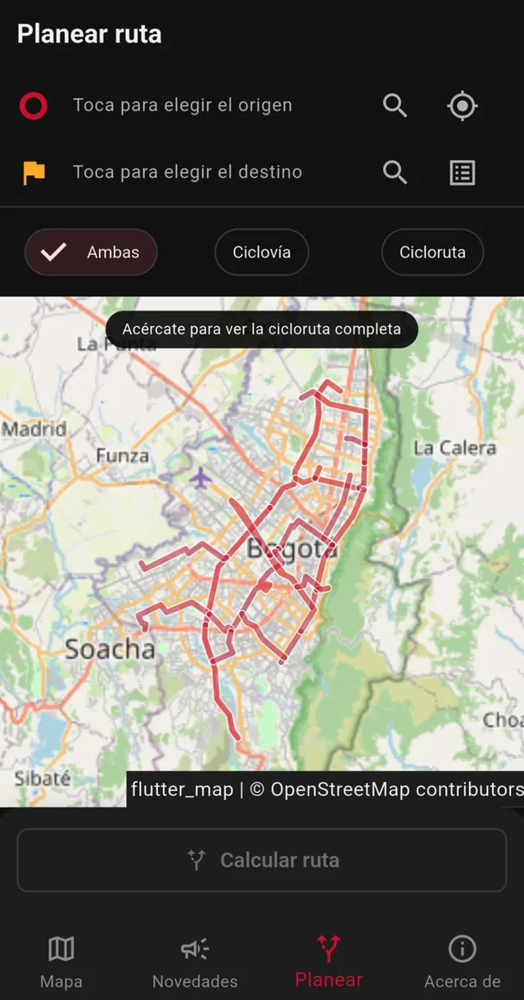
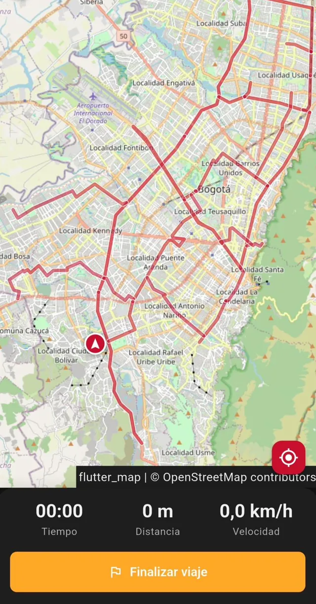

Mapa de la Ciclovía y las ciclorrutas de Bogotá
CicloRuta Bogotá es una app gratuita para Android con los 127,7 km de la Ciclovía de domingos y festivos, la red de ciclorrutas permanentes y los cierres y eventos que publica el IDRD cada semana. Abre directo en el mapa, sin crear cuenta.
Gratis para Android.

Qué puedes hacer con la app
Lo necesario para salir a rodar el domingo o para moverte entre semana por las ciclorrutas.
-

Mapa
Cambia entre la Ciclovía de domingos y festivos y la red de ciclorrutas permanentes, con tu ubicación en el mapa.
-

Novedades
Cierres, desvíos, eventos y puntos de servicio del boletín semanal del IDRD, filtrados por tipo.
-

Planear
Elige origen y destino y calcula un recorrido por la Ciclovía, por ciclorrutas o por ambas.
-

Recorrido
Mientras pedaleas, ves el tiempo, la distancia y la velocidad en vivo.
Pensada para usarla en la calle
Se abre parado en una esquina, con la bici en una mano y el celular en la otra. Por eso va directo a lo que necesitas.
- Sin cuenta
- Abre directo en el mapa. No te pide correo, contraseña ni registro.
- Sin señal
- Guarda el último mapa descargado y te dice hace cuánto se actualizó, para que sepas si puede faltar un cierre reciente.
- Horario del día
- Te muestra si la Ciclovía opera hoy y la extensión del circuito.
- Puntos cercanos
- Hidratación, CAI, ciclotalleres y cicloparqueaderos cerca de donde estás.
Preguntas frecuentes
¿Qué es CicloRuta Bogotá?
Es una app gratuita para Android que muestra en un mapa la Ciclovía de Bogotá, la red de ciclorrutas permanentes y las novedades de la semana que publica el IDRD: cierres, desvíos, eventos y puntos de servicio.
¿Cuál es el horario de la Ciclovía de Bogotá?
La Ciclovía funciona los domingos y festivos de 7:00 a. m. a 2:00 p. m. Algunos festivos no hay jornada, como el 1 de enero. En la pantalla principal de la app ves si la Ciclovía opera hoy.
¿Cuántos kilómetros tiene la Ciclovía de Bogotá?
El circuito tiene unos 127,7 km por las principales vías de la ciudad. La app lo muestra completo, tramo por tramo.
¿Tengo que crear una cuenta para usar la app?
No. Abres la app y el mapa ya está ahí, en modo invitado. No pide correo ni contraseña.
¿La app funciona sin internet?
Sí, con lo último que descargó. La app guarda el mapa y te indica hace cuánto se actualizó. Los cierres más recientes aparecen cuando vuelves a tener conexión.
¿CicloRuta Bogotá es gratis?
Sí. La app es gratuita y se sostiene con anuncios.
¿Hay versión para iPhone?
Por ahora solo está disponible para Android, en Google Play.
¿Es la app oficial del IDRD?
No. CicloRuta Bogotá es una app independiente desarrollada por L22 Apps. Usa información pública del IDRD, la entidad que administra la Ciclovía.